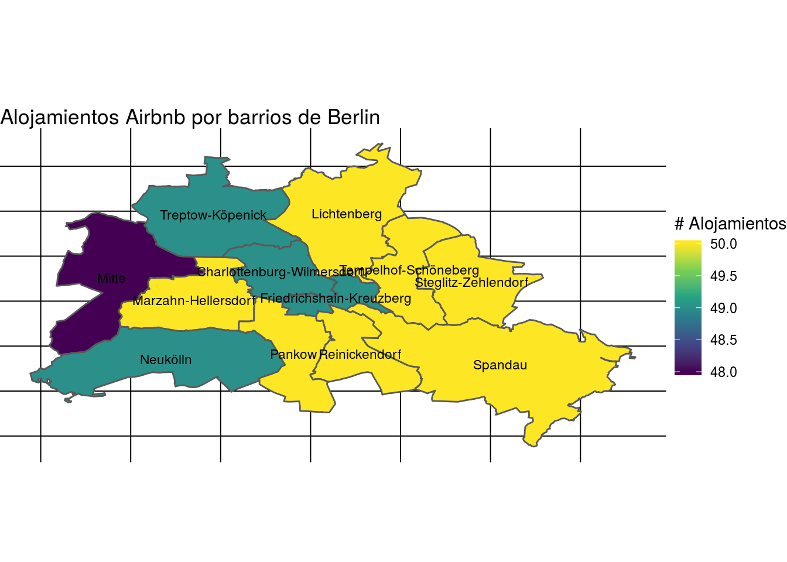

Chapter 3 Data
Ejemplificaremos con datos de alojamientos de Airbnb en la ciudad de Berlin, Alemania, disponibles en Inside Airbnb
Accedemos a los datos desde la url.
listings <- readr::read_csv(url("http://data.insideairbnb.com/germany/be/berlin/2019-07-11/visualisations/listings.csv"))## Parsed with column specification:
## cols(
## id = col_double(),
## name = col_character(),
## host_id = col_double(),
## host_name = col_character(),
## neighbourhood_group = col_character(),
## neighbourhood = col_character(),
## latitude = col_double(),
## longitude = col_double(),
## room_type = col_character(),
## price = col_double(),
## minimum_nights = col_double(),
## number_of_reviews = col_double(),
## last_review = col_date(format = ""),
## reviews_per_month = col_double(),
## calculated_host_listings_count = col_double(),
## availability_365 = col_double()
## )ratings <- readr::read_csv("data/ratings.csv")## Parsed with column specification:
## cols(
## id = col_double(),
## review_scores_rating = col_double()
## )# reviews <- readr::read_csv(url("http://data.insideairbnb.com/germany/be/berlin/2019-07-11/visualisations/reviews.csv"))
#
# neighbour <- readr::read_csv(url("http://data.insideairbnb.com/germany/be/berlin/2019-07-11/visualisations/neighbourhoods.csv"))
# "http://data.insideairbnb.com/germany/be/berlin/2019-07-11/visualisations/neighbourhoods.geojson"3.1 GDS
R no es un SIG (Sistemas de Información Geográficos)
R permite hacer Ciencia de Datos Geográficos (SDG)
| Atributos | SIG | SDG |
|---|---|---|
| Disciplinas | Geografía | Geografía, Computación, Estadística |
| Foco | Interfaz Gráfica | Código |
| Reproducibilidad | Mínimo | Máximo |
3.2 Paquetes
- sp, sf: para manejar información espacial vectorial
raster: para trabajar con rasters
ggplot2, rasterVis, tmap, leaflet, o mapview: para visualizar información espacial
Es sencillo conectar R con programas SIG: GRASS GIS (rgrass7), SAGA (RSAGA), QGIS (RQGIS y qgisremote), incluso ArcGIS (arcgisbinding).
3.3 sf
Combina las funcionalidades de 3 paquetes: sp, rgeos y rgdal
Ventajas respecto a otros paquetes:
Mayor velocidad para importar y exportar los datos
Más tipos de geometrías soportadas
Compatibilidad con tidyverse. Funciona el pipe!
El paquete sp es predecesor de sf.
Muchos paquetes espaciales de R todavía dependen del paquete sp, por lo tanto, es importante saber cómo convertir.
Convertir objetos sf a sp
# Para transformar de SF a SP
objeto.sp <- as(objeto.sf, "Spatial")Convertir objetos sp a sf
# Para transformar de SP a SF
objeto.sf <- st_as_sf(objeto.sp)3.4 st_read()
Los objetos sf tienen una clase que combina ‘data.frame’ y ‘sf’
Los objetos sf también tienen una columna especial que contiene los datos de geometría, usualmente llamado ‘geom’ o ‘geometry’.
Las funciones del paquete dplyr se pueden aplicar. Para saber la totalidad de funciones que son aplicables a un objeto de clase ‘sf’ consultar methods().
Para la unión de objetos espaciales se usa st_join(x, y). El método de join utilizado es siempre left join, manteniendo los registros del primer atributo.
3.5 Importar shapes
Los shapes con límites de los barrios de Berlin los obtenemos aquí.
Para trabajar descomprimimos el zip y dejamos los 5 archivos en una misma carpeta.
# cargo paquete
library(sf)## Linking to GEOS 3.5.1, GDAL 2.2.2, PROJ 4.9.2# importo shapes
unzip("data/GISPORTAL_GISOWNER01_BERLIN_BEZIRKE_BOROUGHS01.zip", exdir = "data/")
barrios <- st_read("data/GISPORTAL_GISOWNER01_BERLIN_BEZIRKE_BOROUGHS01.shp", stringsAsFactors = FALSE)## Reading layer `GISPORTAL_GISOWNER01_BERLIN_BEZIRKE_BOROUGHS01' from data source `/home/calcita/MEGA/R/github.io/R-tutorial/R-tutorial/data/GISPORTAL_GISOWNER01_BERLIN_BEZIRKE_BOROUGHS01.shp' using driver `ESRI Shapefile'
## Simple feature collection with 12 features and 3 fields
## geometry type: MULTIPOLYGON
## dimension: XY
## bbox: xmin: 13.08835 ymin: 52.33824 xmax: 13.76114 ymax: 52.67551
## epsg (SRID): 4326
## proj4string: +proj=longlat +datum=WGS84 +no_defs# consulto clase
class(barrios)## [1] "sf" "data.frame"# consulto métodos
methods(class = "sf")3.6 Mapa de coropletas
Es un mapa temático en el que las regiones se colorean de un motivo que muestra una medida estadística.
3.7 Encoding
library(stringi)# con qué encoding vienen los datos?
stri_enc_mark(barrios$BezName)library(dplyr)##
## Attaching package: 'dplyr'## The following objects are masked from 'package:stats':
##
## filter, lag## The following objects are masked from 'package:base':
##
## intersect, setdiff, setequal, union# defino que los lea como 'ISO-8859-1' y pase a 'UTF-8'
barrios <- barrios %>%
mutate(BezName = stri_conv(BezName, from = 'ISO-8859-1', to = 'UTF-8', to_raw = FALSE))
head(barrios$BezName,12)## [1] "Mitte" "Friedrichshain-Kreuzberg"
## [3] "Pankow" "Charlottenburg-Wilmersdorf"
## [5] "Spandau" "Steglitz-Zehlendorf"
## [7] "Tempelhof-Schöneberg" "Neukölln"
## [9] "Treptow-Köpenick" "Marzahn-Hellersdorf"
## [11] "Lichtenberg" "Reinickendorf"3.8 Expresiones regulares
# los barrios están escritos igual?
table(unique(listings$neighbourhood_group) %in% barrios$BezName)##
## FALSE TRUE
## 5 7# busco la expresión y reemplazo
library(stringr)
large <- barrios$BezName
small <- listings$neighbourhood_group
berlin <- listings %>% mutate(neighbourhood_group = stri_replace(str = small,regex = small, replacement = large , mode="all"))## Warning in stri_replace_all_regex(str, regex, replacement, ...): longer
## object length is not a multiple of shorter object length# chequeo
table(unique(berlin$neighbourhood_group) %in% barrios$BezName)##
## TRUE
## 12Uno los data frame listings y ratings para agregar la variable ‘review_score’
berlin <- left_join(berlin, ratings, by = "id")3.9 ggplot2
# cuento la cantidad de alojamientos por barrios
bn <- berlin %>%
group_by(neighbourhood_group) %>%
summarise(median_price = median(price))
# uno berlin con el objeto espacial barrios
bn <- left_join(bn, barrios, by = c("neighbourhood_group"="BezName"))
# calculo centroides de los polígonos
latlong_mean <- barrios %>% st_centroid(geometry)## Warning in st_centroid.sf(., geometry): st_centroid assumes attributes are
## constant over geometries of x## Warning in st_centroid.sfc(st_geometry(x), of_largest_polygon =
## of_largest_polygon): st_centroid does not give correct centroids for
## longitude/latitude data# convierto la geometría en 2 vectores
latlong_mean <- st_coordinates(latlong_mean$geometry)
latlong_mean <- tibble(latlong_mean[,1], latlong_mean[,2])
names(latlong_mean) <- c('lat', 'lon')
bn <- bind_cols(bn, latlong_mean)
library(ggplot2)
mapa<- ggplot(bn) +
geom_sf(aes(fill = median_price)) +
geom_text(aes(x = lat, y = lon, label = neighbourhood_group), size = 3, hjust = 0.5)+
scale_fill_viridis_c("# Alojamientos", option = "D") +
ggtitle("Alojamientos Airbnb por barrios de Berlin") +
theme_void()
mapa
3.10 leaflet
El paquete leaflet es una extensión java script para R que permite hacer mapas interactivos.
Tutorial para comenzar.
3.11 leaflet()
| Función | Descripción |
|---|---|
| leaflet() | crea el objeto leaflet |
| addTiles() | define el mapa de base, por defecto utiliza OpenStreetMap. Opciones |
| setView() | define por centroide y zoom |
| addMarkers() | marcadores a partir de una capa espacial o de pares de coordenadas. |
El orden de los comandos es importante.
3.12 leaflet
library(leaflet)
contenido <- paste(sep = "<br/>",
paste0("<img src='https://upload.wikimedia.org/wikipedia/commons/4/45/Estadio_Centenario_%28vista_a%C3%A9rea%29.jpg", "' />"),
paste0("<b>Name: </b>", "Estadio Centenario"),
paste0("<b>Place: </b>", "Montevideo, Uruguay"),
paste0("<a href='https://es.wikipedia.org/wiki/Estadio_Centenario", "'>Link</a>"))
mapa <- leaflet() %>%
addTiles() %>%
addMarkers(lng = -56.159158, lat = -34.888494,
popup = contenido)
mapa3.13 Mapa
3.14 Alojamientos Berlin
# Alojamientos caros de Airbnb en Berlin
top <- filter(berlin, price > 500 & !is.na(review_scores_rating))
# de sf a sp
barrios.sp <- as(barrios, "Spatial")
barrios.sp@data <- merge(barrios.sp@data, top, by.x ="BezName" , by.y="neighbourhood_group")
library(leaflet)
airbnb = makeIcon("https://raw.githubusercontent.com/calcita/R-tutorial/master/images/airbnb.png","/https://raw.githubusercontent.com/calcita/R-tutorial/master/images/airbnb@2x.png", 18, 18)
mapa <- leaflet(data = barrios.sp) %>%
#setView()
addTiles() %>%
addMarkers(lng = ~longitude, lat = ~latitude, icon = airbnb)
#addCircles()
#addLegend()
mapa